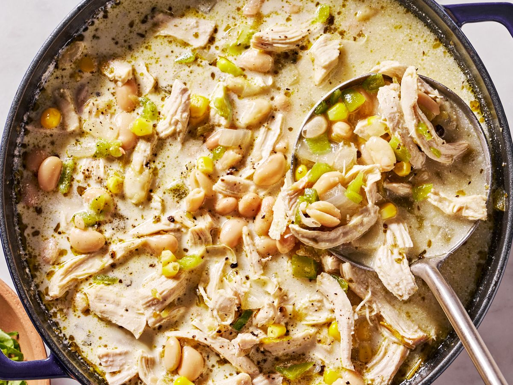

White Chicken Chili

Description
As a cozy weeknight dinner or an addition to your
game day spread, chili is the comfort food staple
we can’t get enough of. We’ve created our fair
share of variations on the classic, but this white
chicken chili is one of our all-time favorites.
Adding white beans makes this heartier than your
average chicken noodle soup, and the addition of
green chiles, jalapeño, and sour cream add the
perfect amount of heat and creaminess to switch up
classic chili. Plus, everything comes together in
less than an hour, making it an easy, no-stress
dinner to cozy up to any time of year.
Ingredients
- 1 tbsp neutral oil
- 1 medium yellow onion, chopped
- 1 japaleno, seeded, finely chopped
- 2 cloves garlic, finely chopped
- 1 tsp dried oregano
- 1 tsp ground cumin
- 3 boneless, skinless chicken breasts, cut into
thirds
- 5 c. low-sodium chicken broth
- 2 (4.5-oz.) cans green chiles Kosher salt
- 1 1/2 c. frozen corn
- 1/2 c. sour cream
- 1 avocado, thinly sliced, for serving
- 1/4 c. chopped fresh cilantro, for serving
- 1/4 c. crushed tortilla chips, for serving
- 1/4 c. shredded Monterey Jack, for serving
Steps
- In a large pot over medium heat, heat oil.
Add onion and jalapeño and cook, stirring,
until softened, about 8 minutes. Add garlic,
oregano, and cumin and cook, stirring, until
fragrant, about 1 minute. Add chicken, broth,
and chiles; season with salt and pepper. Bring
to a boil, then reduce heat and simmer,
uncovered, until chicken is tender and cooked
through, 10 to 12 minutes. Transfer chicken to
a plate and shred with 2 forks.
- Set the soften peppers into a lightly oiled
baking dish.
- Add beans to pot and bring to a simmer. Cook,
smashing about one-quarter of beans with a
wooden spoon, until slightly thickened, about
10 minutes. Add corn and shredded chicken and
cook, stirring, until heated through, about 1
minute more. Remove from heat and stir in sour
cream.
- Ladle chili into bowls. Top with avocado,
cilantro, chips, and cheese.